Auswärts beim Tabellenzweiten ohne Punkte – Seipel-Elf unterliegt in Stahnsdorf
Mit viel Rückenwind machte sich die Seipel-Elf bereits am Freitagnachmittag auf den Weg nach Stahnsdorf. Der 4:3-Heimerfolg gegen den VfB Krieschow aus der Vorwoche hatte neue Energie freigesetzt, und unsere Blau-Weißen wollten genau diesen Schwung mitnehmen. Doch die Aufgabe hätte kaum schwieriger sein können: Mit dem RSV Eintracht 1949 wartete der aktuelle Tabellenzweite auf die Heiligenstädter – ein Team, das in dieser Saison bisher kaum Schwächen gezeigt hat.
Kruska bringt die Gastgeber in Führung
Es entwickelte sich eine intensive Partie. Unsere Jungs hielten kämpferisch dagegen und versuchten, dem Favoriten Paroli zu bieten. Doch in der 23. Minute schlug der RSV erstmals zu: Dominik Kruska nutzte eine Gelegenheit der Gastgeber und brachte die Mannschaft von Trainer Patrick Hinze mit 1:0 in Führung.
Die Seipel-Elf ließ sich davon jedoch nicht aus der Ruhe bringen. Kurz vor der Pause bot sich sogar die große Chance zum Ausgleich, als Moritz Ruprecht aussichtsreich zum Abschluss kam. Der Ball wollte jedoch nicht ins Netz – und so ging es mit einem knappen Rückstand in die Kabinen.
Freistoß kurz nach der Pause entscheidet das Spiel
Kaum war die zweite Hälfte angepfiffen, mussten unsere Blau-Weißen den nächsten Rückschlag hinnehmen. Arthur Ekallè verwandelte einen Freistoß und brachte den Ball zum 2:0 im Tor unter. Ein Treffer, der den RSV endgültig auf die Siegerstraße brachte.
Trotzdem steckte der SCH nicht auf. Unsere Mannschaft versuchte weiterhin, offensiv Akzente zu setzen und sich Chancen zu erspielen. Doch gegen die stabile Defensive der Gastgeber fehlte am Ende das letzte Quäntchen Glück und Durchschlagskraft.
Blick nach vorn: Heimspiel gegen Plauen
So blieb es am Ende bei einer 0:2-Niederlage beim Tabellenzweiten aus Stahnsdorf.
Viel Zeit zum Hadern bleibt allerdings nicht, denn schon am kommenden Wochenende wartet die nächste Aufgabe: Dann empfängt die Seipel-Elf den VFC Plauen am Gesundbrunnen.
Spieldaten
RSV Eintracht 1949 – 1. SC 1911 Heiligenstadt 2:0 (1:0)
RSV Eintracht 1949
Brenn – Grüllmeister – Samson – Hellwig (81. Sommer) – Plumpe – Kruska (63. Jupolli) – Fron – Steinborn (19. Ekalle) – Mustapha – Krüsemann (63. Krüsemann) – Bilbija (81. Koschembahr)
SC Heiligenstadt
Stankovic – Wolanski – Köhler (46. Pietsch) – Taveres – Stashenko (85. von Breitenbuch) – Michalek – Schnellhardt – Ruprecht (85. Wilhelm) – Voilenko – Gorges – Bako (63. Fiedler)
Schiedsrichter
Wundram
Zuschauer
98
Tore:
1:0 Kruska (22.), 2:0 Ekallè (50.)
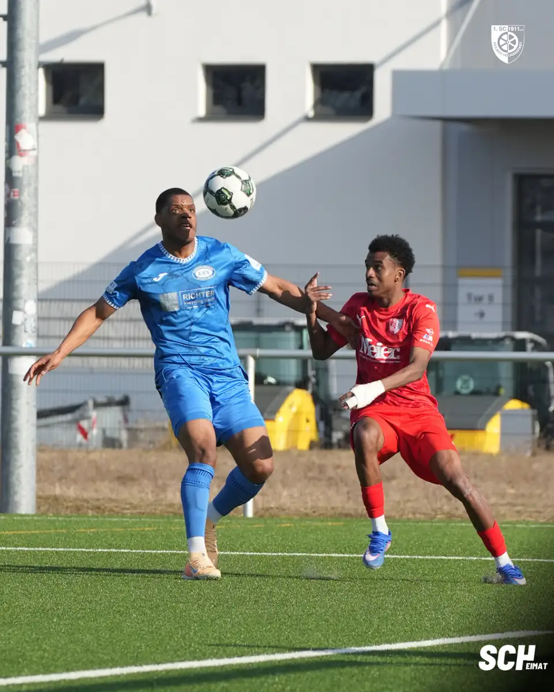
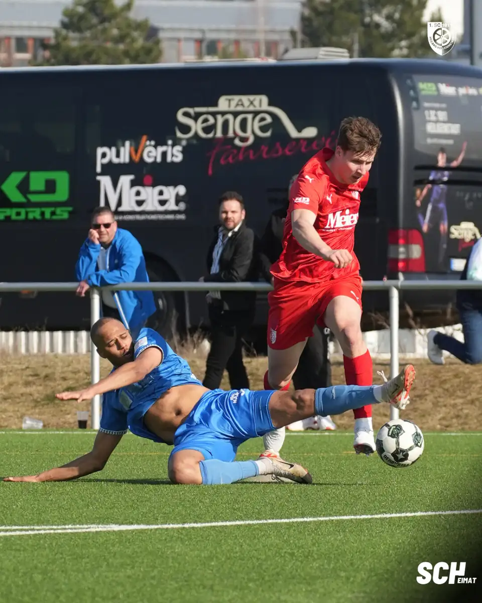
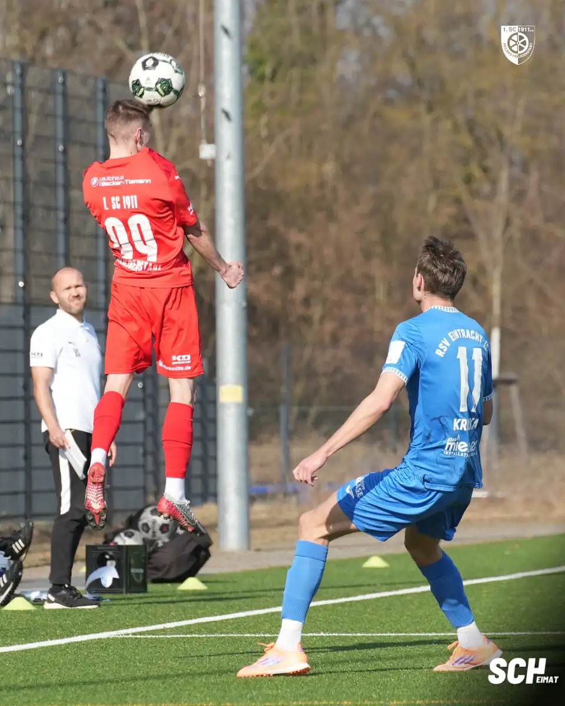
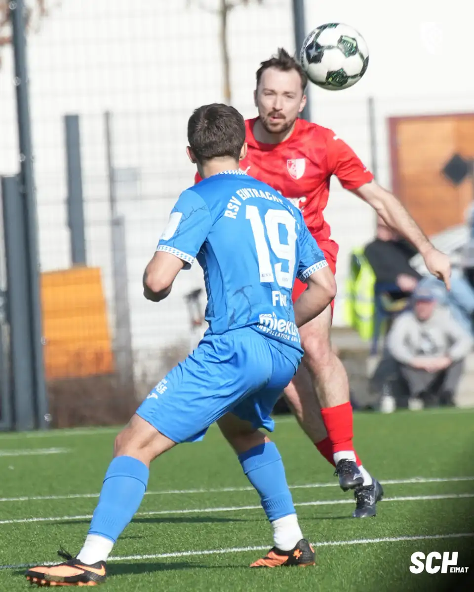
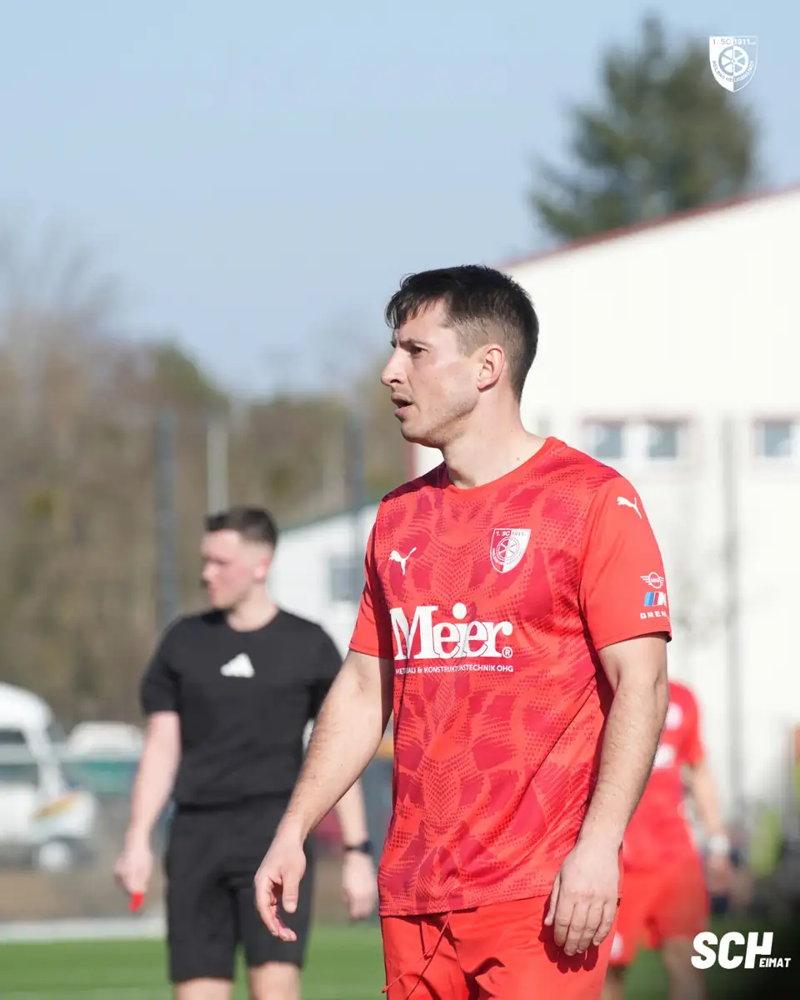
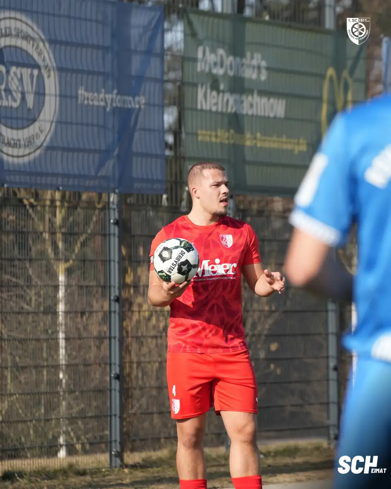
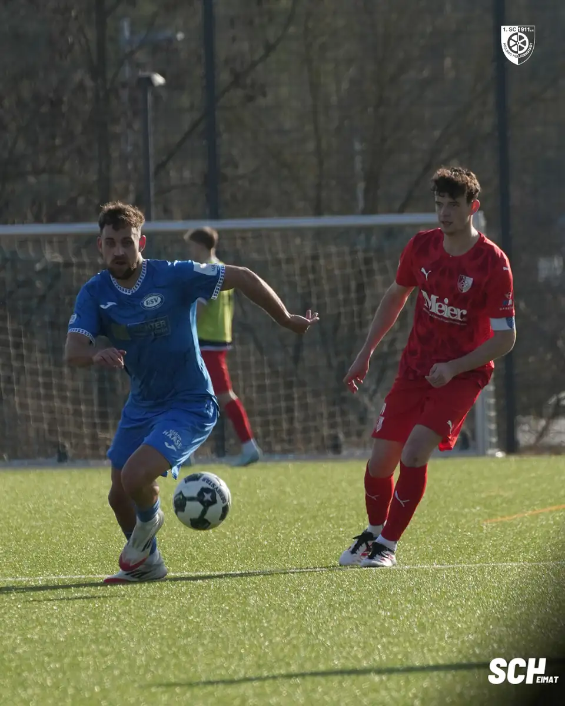
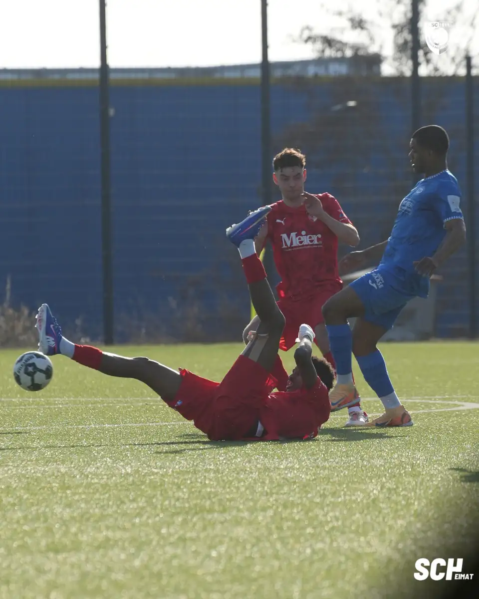
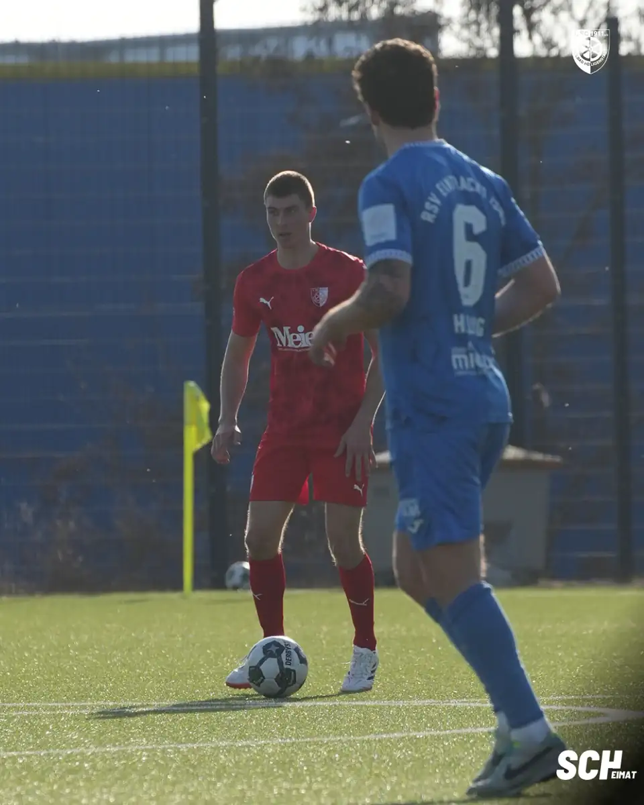
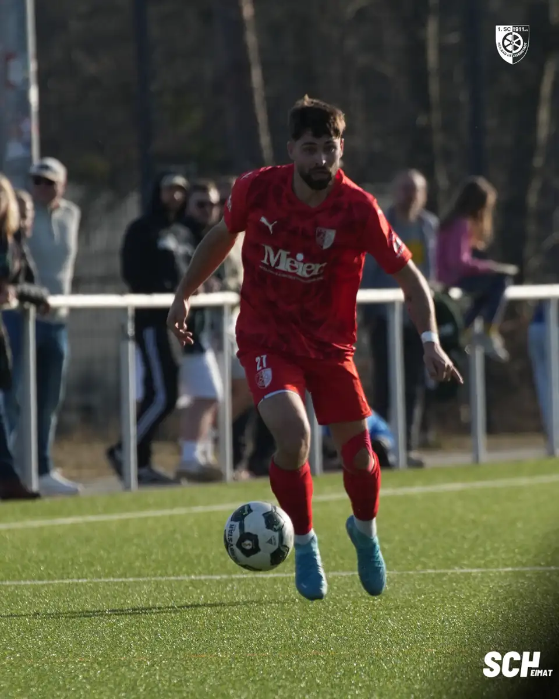
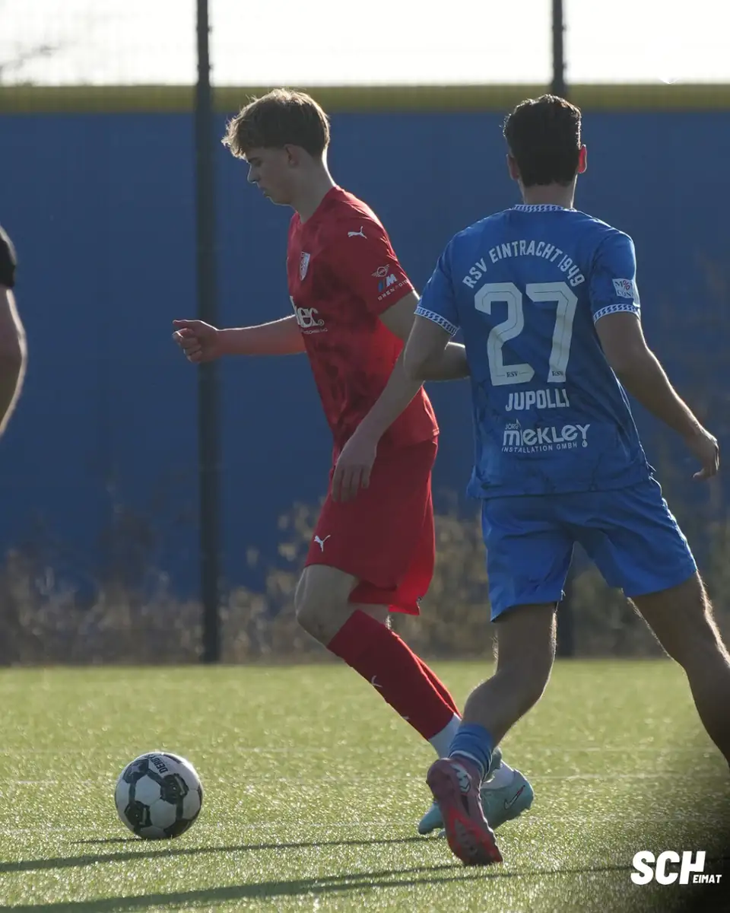